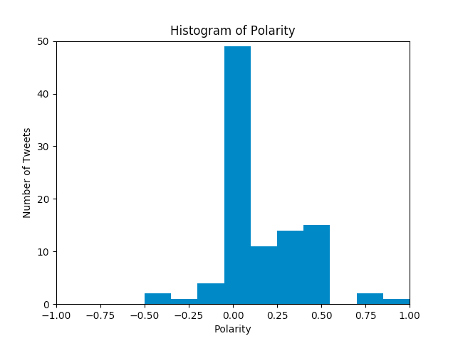
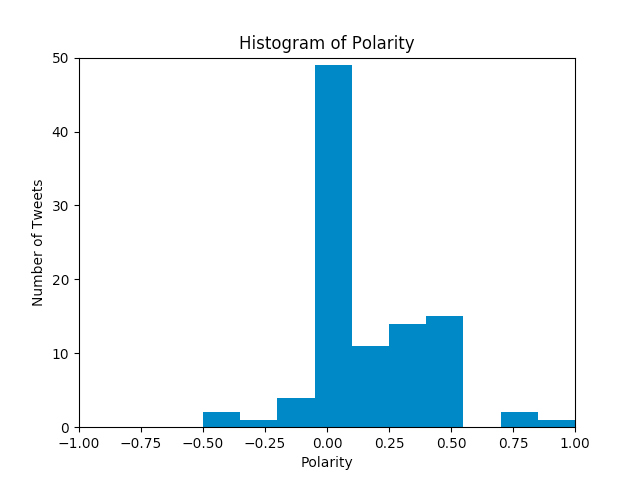

About Me

I am a seventeen year old girl who enjoys exploring computer science concepts and technology. I made this Obamicon filter through Python. I graduate from high school in 2020 and plan on going to college. I want to study computer science or acturarial science. My favorite subject in school is math. I live with my parents, older sister, and my dog in River Forest, IL. My favorite thing to do is hangout with my friends! (girlswhocode.com)
Contact Information: fallogan501@gmail.com
Education: Oak Park and River Forest High School (oprfhs.org)
Experience with Computer Science:
Scratch, Python, HTML, CSS, JavaScript


 
